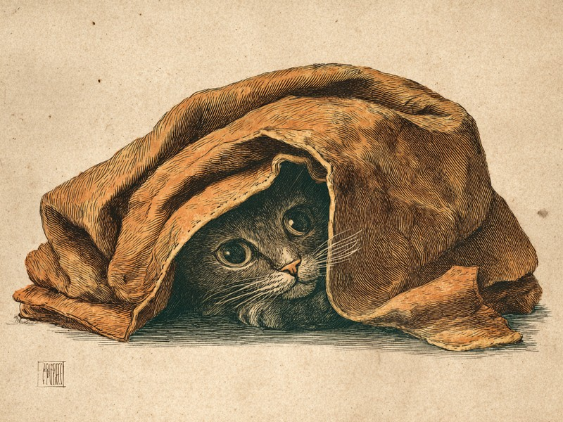

猫の祖先は寒暖差の大きい砂漠出身で、もともと体温調節が苦手。平熱がやや高めなこともあって、人間より暖かい場所を強く好みます。 Why do cats love curling up in warm spots all winter long?
平熱が高いのに、体温調節はちょっと苦手
猫がコタツを好むのは、体温を高めに保つ必要があるのに自力での体温調節が苦手で、外から温めてもらう方がエネルギーを節約できるからなのです。猫の平熱はおよそ38℃前後と人間よりも高めで、体温を38〜39℃あたりに保つ必要があります。ところが寒い場所で自力で体を温め続けようとすると、それだけ多くのエネルギーを使ってしまいます。そこで頼りになるのが、コタツや日だまりのような「外から温めてくれる場所」。暖かい場所にじっとしていれば、体温を保つためのエネルギー消費を抑えられるというわけです。猫がコタツから出てこないのは、なまけているのではなく、体にとって理にかなった省エネ行動なのです。
ご先祖さまは砂漠暮らしだった
猫の祖先は砂漠地帯の動物で、昼夜の寒暖差が大きい環境で昼間の暖かさを利用して体温を保つ習性が身についたと考えられています。猫がここまで暖かさを求めるのには、こうした進化の歴史も関わっているというわけです。砂漠は昼間の暑さが厳しい一方で、夜は冷え込みます。日本の冬のコタツや窓辺の日だまりは、猫にとってはその名残を満たしてくれる、ちょうどよい「砂漠の昼間」なのかもしれません。
出典: Driscoll, C.A. et al. "The Near Eastern Origin of Cat Domestication" Science, 2007. science.org
コタツは快適、でも入りっぱなしには注意
結論から言うと、コタツは猫にとって快適な場所ですが、入りっぱなしは低温やけどや脱水のおそれがあるので注意が必要です。コタツのように体に近い位置で熱が当たり続けると、低温やけどを起こすおそれがあります。また、暖かい空間に長くこもることで体の水分が失われ、脱水症状につながるリスクも指摘されています。猫は自分から「熱すぎる」と申し出てはくれないので、時々コタツから出して様子を見る、そばに新鮮な水を置いておく、コタツの温度設定を控えめにするといった配慮をしてあげると安心です。
猫と犬、どちらが寒がり?
答えは猫で、快適と感じる温度域が犬より高いうえ、震えて体温を作るより暖かい場所へ移動して調節する傾向が強いとされています。同じ家で暮らしていても、犬はケロッとしているのに猫だけコタツにこもりきり、という光景は珍しくありません。実はこれ、好みの温度そのものが違うのです。体温調節に負担がかからない適温域(サーマルニュートラルゾーン)は、猫の場合およそ30〜38℃とされています。人間が快適と感じる室温がおよそ18〜25℃、犬がおよそ20〜30℃とされるのに比べると、猫は犬よりもさらに高い温度を好む傾向があるのですね。人間にとっての「ちょうどいい部屋」は、猫にはまだ肌寒いのかもしれません。
もうひとつの違いは、寒さへの対処のしかたです。猫は犬のように震えて体温を作ることが苦手なぶん、日なた・暖房の近く・コタツのような暖かい場所を自分で見つけて移動するのです。家じゅうの暖かいスポットを知り尽くしているのは、そういう事情なのです。
出典: "The heat is on: the feline TNZ" Veterinary Ireland Journal. veterinaryirelandjournal.com
猫が寒いときに体を丸めるのは、体の表面積を小さくして熱が逃げるのを防ぐためと言われています。逆に暑い季節には、手足を伸ばして体を長くし、熱を逃がしやすい姿勢をとります。